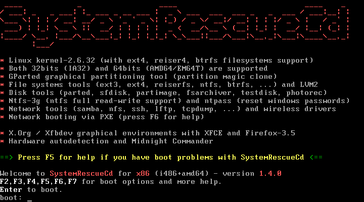

緊急時刻的最佳幫手：SystemRescueCD

※ 簡介
常說人不是機器，需要適時適量的休息。電腦或是各種機械裝置的發明，除了減少人類的工作量以外，其中一個相當重要的原因，是人類無法二十四小時持續工作。但即使是最先進的設備，也無法避免預期之外的故障問題。如果只是一般機械性的裝置，故障後完成維修與檢測，多半就能繼續使用。但如果是有存放資料的電腦系統，無預警的斷電或是停機，都可能造成重大問題。最常見的，便是作業系統暫存於記憶體中的資料來不及回存至磁碟中，損失輕微的情況可能是資料流失，更嚴重的情況則可能整個作業系統一併毀損，連開機都無法完成。
如果是個人使用的電腦發生類似的情況，可能因為損失的資料只是一些無關緊要的檔案，所以多半會重新安裝作業系統的方式了事。但如果是公務上使用的電腦，或是存放重要資料的系統，在重新安裝作業系統之前，可能需要先將資料救回，否則損失可能嚴重到無法估計。但問題在於此時電腦的作業系統早以毀損而無法開機，如果要搶救此部電腦中的資料，多半只能將硬碟拆除移至其他可以正常開機的電腦，再進行搶救。但這樣的方式得拆開電腦機殼，不但耗費時間，也不方便，更可能在搶救過程之中增添不必要的變數。
事實上搶救受損的電腦系統並不一定需要如此麻煩，因為有許多工具軟體可以作為救援工作的幫手，提供較為方便的作業環境，以便供使用者搶救系統資料時使用。例如由 sysresccd.org 所發展的 SystemRescueCD，便是一套相當適合在系統發生問題的緊急時刻，需要進行特別處理時作為搶救工具使用的工具軟體。

▲ SystemRescueCD 的開機畫面同時也是線上說明文件的一部份
SystemRescueCD 是一套以 Linux 作業系統所開發而成的系統救援光碟，本身以光碟映像檔的格式進行散佈。雖然名稱中與散佈模式都與光碟有關，但事實上 SystemRescueCD 也可以利用 USB 隨身碟作為存取媒體，只要電腦本身支援 USB 裝置的開機功能即可。名稱中以系統救援為名，但這並不表示 SystemRescueCD 只能使用在系統毀損後進行資料搶救時使用，日常的系統維護作業，其實也相當適合以 SystemRescueCD 進行。因為系統管理與系統搶救所需要進行的工作，以及可能動用的工具軟體，本來就有相當程度的類似之處。可以在系統救援時使用的軟體，大多也能在系統管理方直接採用。
※ 功能與特色
◎ 操作簡便
對於系統管理方面的相關工作，例如建立或是編緝硬碟的新分割區，經常給人一種難以親近的感覺，尤其是初次接觸系統管理，對於相關工具或是知識尚未完全了解的新手而言更是如此。 SystemRescueCD 期望可以提供使用者一個易於上手的系統管理介面，因此設計出來的操作介面相當容易上手。當然系統管理員還是必須對於系統相關的知識有些基本了解，但有了 SystemRescueCD 的輔助，至少在操作過程中發生問題的機會少了許多。
◎ 以 Linux 相關工具為主
由於 SystemRescueCD 本身是以 Linux Live CD 的方式設計，開機完成後基本上也是進入 Linux 的作業模式，因此系統內建的工具軟體自然也是以 Linux 相關的版本為主要選擇。這些工具軟體可以大略分成系統工具與基本工具二大類，其中系統工具包含了磁碟分割區處理工具、磁碟映像工具，以及檔案系統等等。而磁碟分割區處理工具包含有 sfdisk、GParted 等著名的工具軟體，可以直接針對磁碟底層的分割區進行建立、刪除等基本作業，也能處理像是磁碟分割區切割、合併分割區等進階動作。檔案系統工具也有不少選擇，但基本上因為各種檔案系統可能都擁有自己的工具軟體，所以在不同的檔案系統進行操作時，可能可以動用的工具軟體選項也會隨之有所不同。
基本的工具軟體方面， SystemRescueCD 也提供了一些進行基本作業所需要的工具軟體，例如編輯器、檔案瀏覽器等等。編輯器從最基本的 vi 一直到圖形化介面的編輯器都有支援，而檔案瀏覽器則是整合了數個相當知名，功能也十分齊全的檔案管理軟體。例如 emelFM2、Midnight Commander 等等。無論是使用何種軟體，使用者都無需進行安裝作業便可直接使用。這樣的使用方式除了較為方便以外，在緊急時刻需要快速進行作業時，相對的也能節省一些時間。
▲ 以 Linux 為核心的 SystemRescueCD，提供的工具程式自然以 Linux 現有的軟體為主。
◎ 支援的作業系統
在作業系統的支援方面，雖然 SystemRescueCD 本身是以 Linux 作業系統開發而成，但這並不表示 SystemRescueCD 只能使用在單一的作業系統環境上。當然，以 Linux 作為作業系統的伺服器，或是使用在一般作業的電腦上，都能以 SystemRescueCD 進行系統維護或救援作業；但即使要處理的是 Windows 作業系統，SystemRescueCD 也能運用自如。因為系統救援要進行挽救的是資料檔案本身，而非作業系統或其相關的應用軟體。軟體都能再次安裝，但檔案本身才是最重要的資料。因此可以大膽的說，雖然 SystemRescueCD 官方網站僅列出 Linux 與 Windows 的支援功能，但只要 SystemRescueCD 可以存取該作業系統的檔案系統，要使用 SystemRescueCD 進行系統維護或是資料救援，應該都不會有太大問題。
◎ 支援的檔案系統
SystemRescueCD 本身採用的核心為 Linux 2.6.32.10 版，此版本支援大多數常見的檔案系統，因此 SystemRescueCD 也能加以處理此核心所支援的各種檔案系統。例如 Linux 系統中最常見的 ext2、ext3、ext4 等基本的檔案系統，同時也支援 reiserfs、reiser4、xfs 等其他檔案系統格式。至於 Windows 常見的 NTFS 或是 VFAT 格式，SystemRescueCD 也都能進行處理。
當然，在使用網路進行檔案分享如此盛行的今天，SystemRescueCD 也沒有忘記要支援網路相關的檔案系統。目前網路芳鄰所使用的 Samba，或是在進行嵌入式系統開發時經常使用的 NFS 網路檔案系統，也都是 SystemRescueCD 支援的檔案系統中的一部份。
◎ 可採用雙模式進行操作
有些使用者認為文字模式處理較快，只需要熟記指令，便能快速完成工作。有些人則認為記憶指令太過累人，寧可使用圖形模式進行作業，即使這可能讓系統的執行效能稍微下降。孰是孰非其實相當難以下定論，但為了滿足各種類型的使用者，SystemRescueCD 同時支援二種作業模式，只需要在開機時進行選擇即可。
在文字模式下如果要進行 Windows 作業系統的維護或救援工作，可以直接將 FAT 或 NTFS 分割區掛載至檔案系統中。但由於 SystemRescueCD 無法直接對 NTFS 檔案系統進行寫入操作，所以可以改用 NTFS-3G 工具進行。如果希望進行檔案的複製、搬移等工作，可以利用 Midnight Commander 的文字模式版本。至於文字編輯器，則有 vim、qemacs 等傳統的編輯器可以使用。至於實際作業時所使用的虛擬終端機，SystemRescueCD 預設提供六個文字型態的虛擬終端機，可直接使用 Alt-F1 至 Alt-F6 的熱鍵切換使用。
▲ SystemRescueCD 支援文字與圖形二種作業模式，開機時進行選擇即可。
如果要啟用圖形介面的作業模式，只要在開機時輸入「wizard」，或是先進入文字模式再執行「startx」，都能進入圖形模式。SystemRescueCD 提供 Xorg 與 Xvesa 二種圖形環境，建議先行使用 Xorg，若無法正常啟動再嘗試 Xvesa。Xvesa 雖然相容性最好，但缺點是只能在 32 bit 的核心中執行，且效能並未經過最佳化，可能會有反應較為遲頓的情況發生。SystemRescueCD 的圖形模式也提供了許多方便的工具軟體，例如 GParted 這套圖形化的硬碟分割區管理工具，以及 GVim 或 Geany 等文字編輯器，還有著名的 Firefox 瀏覽器等等。
◎ 修復工具
SystemRescueCD 內建的修復工具相當多，種類也是相當多元化。例如作為磁碟分割表處理工具的 sfdisk，可以將磁碟分割表儲存至檔案中作為備份，必要時亦可從檔案中讀出並進行回存。FSArchiver 則可以讓使用者將檔案系統直接以壓縮方式儲存至備份檔之中，在有需要時也能進行回存。回存時可以在不同大小的磁碟分割區之中進行，甚至還能在不同格式的檔案系統中執行。Partimage 則是另一套硬碟備份與回存的工具，可以在系統的硬碟毀損，或是誤刪資料時重新恢復硬碟中的資料。如果系統的分割區資訊遺失，或是已經無法正常啟動，則可以使用 TestDisk 這套相當知名的磁碟修復軟體。TestDisk 可以回復遺失的硬碟分割區，也能使用修復啟動磁區的方式嘗試修復無法開機的作業系統。如果不小心誤刪重要檔案，以可使用此工具進行挽回。只是回復已刪除檔案的功能只能在 FAT、NTFS 或是 EXT2 的檔案系統上執行，其他檔案系統則無法支援。
◎ 系統工具
即使不打算採用 SystemRescueCD 進行系統修復作業，SystemRescueCD 本身也提供了相當豐富的系統管理相關工具程式，可以用來進行日常的管理作業。例如 Gparted 可以作為磁碟分割區的圖形化管理軟體，另外 SystemRescueCD 也提供了文字介面的類似程式 GNU-Parted。GRUB 或是 lilo 開機載入程式的提供，則讓系統在開機載入程式遭到其他軟體破壞（例如 Windows）時，可以重新安裝。檔案系統相關的工具軟體也是 SystemRescueCD 相當重要的一環，只要是 SystemRescueCD 有支援的檔案系統，相關的工具程式也都能在此光碟片之中找到。
事實上 SystemRescueCD 在尚未進入作業系統時，也有提供許多工具軟體可以進行系統檢測。例如 memtest 可以進行記憶體測試，ntpasswd 可以直接修改 Windows 系統的登入密碼等等，也是相當方便的功能。
▲ 開機後即使不進入 SystemRescueCD 的作業環境，也能進行基本的維護與檢查動作。
※ 結語
僅管有許多工具軟體可以像 SystemRescueCD 一樣，在重要時刻幫助使用者進行資料搶救或是回復的動作，但其實人們並不能太過依賴這些工具軟體，以為可以就此高枕無憂，不必再擔心資料流失的問題。工具軟體只是事後的補救，而且不見得可以百分之百的復原所有資料。如果希望可以讓系統故障時的損失減到最少，甚至毫無損失，最好的辦法只有三個，便是「備份、備份、備份」。
◎ 作者簡介
翁卓立
逢甲大學資訊工程學系畢業，現為台灣科技大學電子所在職專班學生。目前擔任韌體研發工作，主要使用 Embedded Linux 進行產品開發。著有「Linux 進化特區：Ubuntu 9.04 從入門到精通」等書。